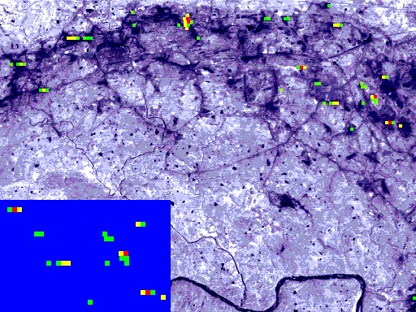

Cover
Surface thermal anomalies associated with underground fires in Jharia coal mines, India
A. Prakash, A.K. Saraf, R.P. Gupta, M. Dutta and R.M. SundaramDepartment of Earth Sciences, University of Roorkee, Roorkee 247 667, India

International Journal of Remote Sensing, 16(12), 2105-2109.
Copyright © 1995 by Taylor & Francis Ltd.

The cover picture is a processed TM image (28 November 1990), showing surface thermal anomalies associated with subsurface fires in a part of the Jharia coal mines, Bihar State, India. The greyish-bluish regions correspond to background surface temperatures, and green, yellow and red depict successively higher surface temperatures. The black linears and patches are coal bands, quarries and dumps. The Damodar River appears in the south.